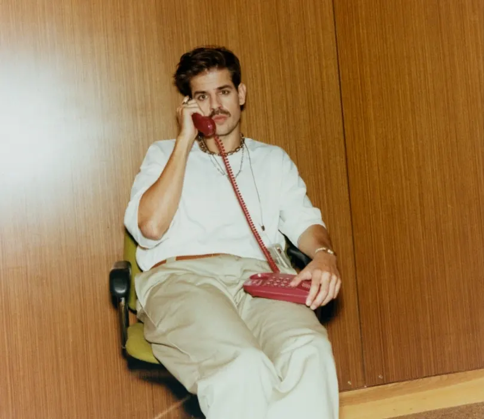
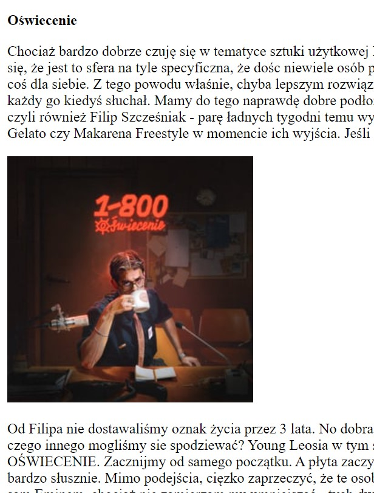

Festiwal muzyczny Kochanowskiego
12.06.2026 w Karuzeli
instagram: https://www.instagram.com/festiwalmak?igsh=MXY2c2dsYnB3aXl2dA==

Zalecenia - słuchać na zapętleniu. Wszystko owinięte tą lekką otoczką niepokoju i siedzącego z tyłu głowy głosu , który w kółko szepcze o fakcie przemijania. Chwila w której czytasz te słowa jest inną od tej, w której czytasz te. Jesteś już inną osobą niż minutę temu. Oczywiście nie wszystko jest takie piękne i idealne. I mam tutaj na myśli konkretne pozycje. Co dokładnie? Ano przykładowe gelato, które marnie stara się pwoielić klimat Deszczu ma betonie i kończącego się lata, albo Codziennie, które ani nie brzmi, ani nie niesie ze sobą czegoś szczególnie odkrywczego. Czy też nawet Całe Lata, które nie jest złe - ale czy naprawdę czekaliśmy aż trzy lata na kolejny zwyczajny, wakacyjny hit radiowy?
